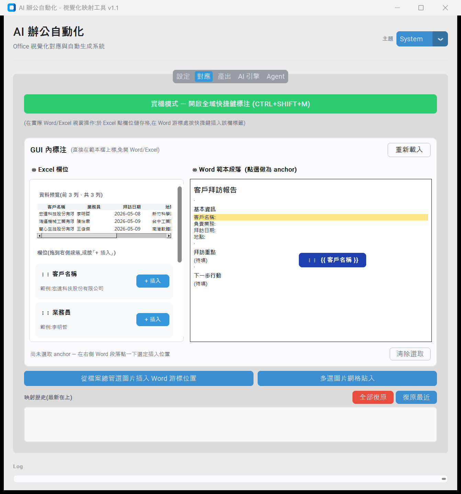
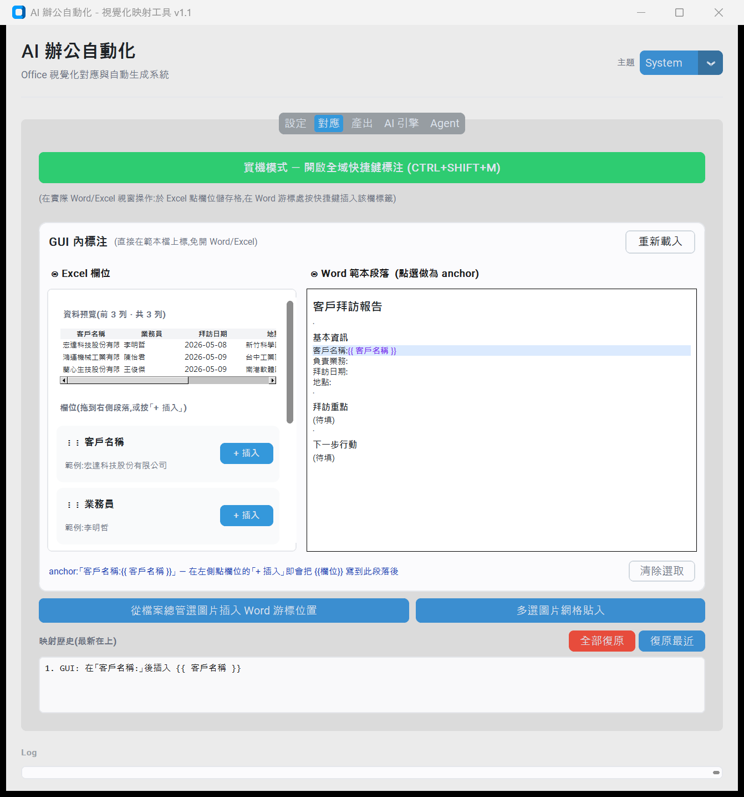
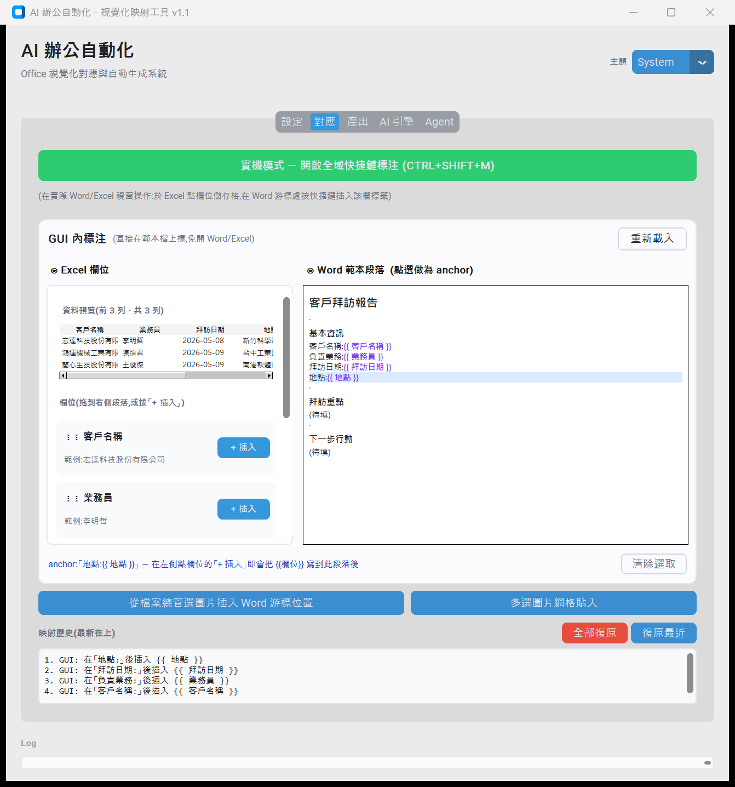
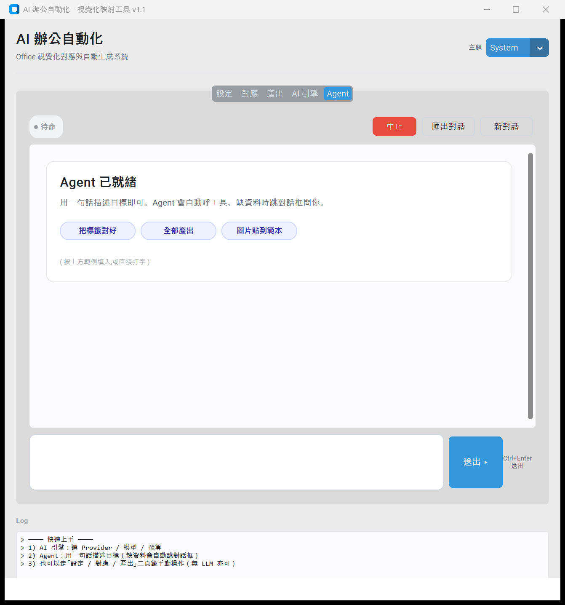

設定
Word 範本 / Excel 數據 / 工作表 / 檔名規則 / 輸出資料夾
對應 · 左右對照
左:Excel Treeview 預覽真實資料 + 欄位 list (⋮⋮ 拖拉) · 右:Word 段落 style-aware 渲染 (Title / Heading 2 / Normal)
拖拉中
Drop target 段落黃色高亮 + 浮動 tooltip 跟著游標,顯示要插入的變數名
落地後
「客戶名稱:」段落變成「客戶名稱:{{ 客戶名稱 }}」,變數紫字渲染 · 映射歷史記錄一筆
全部標完
4 次拖拉完成所有欄位映射 · 映射歷史完整紀錄 · docx 真檔已被改寫
產出
檢查範本變數 vs Excel 欄位 · 批次產出 · 進度條
AI 引擎
Gemini Provider · Planner / Reviewer = gemma-4-31b-it · 審查 rubric · 預算上限
Agent · 對話流
訊息泡泡 + 角色 badge + 時間戳 · 工具呼叫緊湊樣式 · 助理回覆走 markdown 渲染含真表格
Agent · 待命狀態
welcome card + 範例 prompt chips(點擊填入)· 狀態 pill(● 待命)